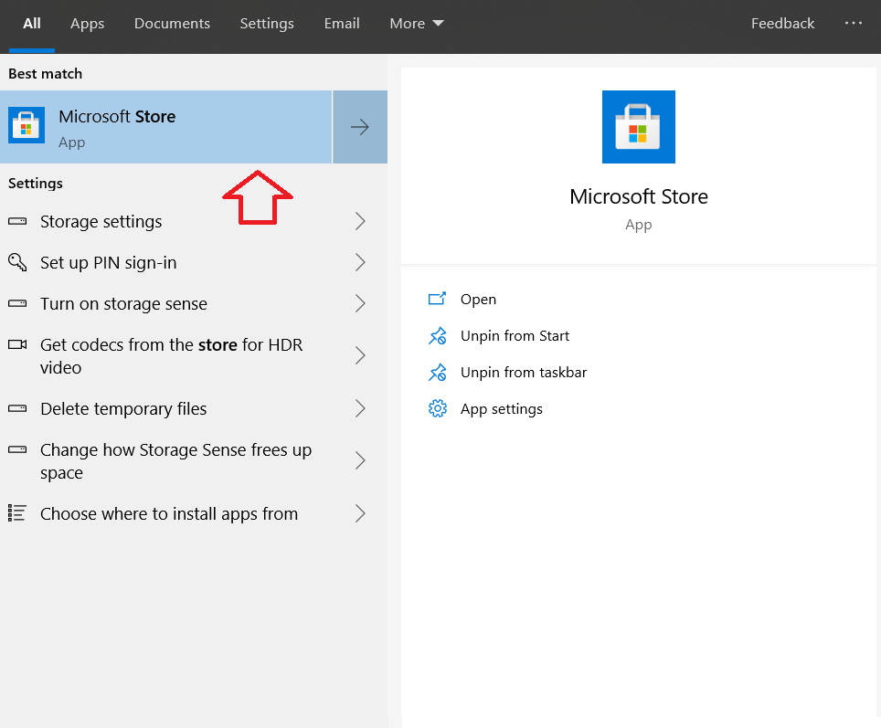

Spatio-temporal analysis with GRASS GIS
IHE Delft Institute for Water Education
The Netherlands
Outline
- Installation steps
- Introduction to GRASS GIS
- Start with GRASS GIS - first steps
- Explore features in GRASS GIS
- Exercise 1 - Seasonal aggregation and statistical analysis
- Exercise 2 - Spatio-temporal analysis of climatic data
Installation steps
System requirements
This training is tailor made for Windows 10 and all other common Linux dsitributions. In WIndows 10, "Bash for windows" utility will be used to run GRASS GIS and bash commands. If you are using Linux you can skip to the section on installing GRASS GIS.Windows 10
First step is to set up "Bash for Windows" in your computer.
- Go to the Start menu and search for PowerShell. Run it as administrator
- Type in the following command.
You’ll be asked to confirm your choice. Type Y and press enter:# Right click on Mouse to paste the below command in powershell (some times double right click) Enable-WindowsOptionalFeature -Online -FeatureName Microsoft-Windows-Subsystem-Linux - Restart the computer
Open 'Windows Powershell' as administrator
Paste the command and press enter in keyboard
- Go to the Windows Store and search for “Linux”.
- Install Ubuntu 20.04 LTS (It will take some time depending on the internet connection)
- Go to programs and search for Ubuntu, open the Ubuntu bash
- Set up a username and password as instructed in the bash command line
- Install MobaXterm software for gui support in Ubuntu bash from this link

Open Microsoft store
Open Microsoft store
Search for Ubuntu 20.04 LTS
Third step - Once the installation is over, open the Ubuntu command line (bash) and create a user name for Linux.
Create username in Linux

MobaXterm with Ubuntu Linux open (Highlighted where you should double click to open Ubuntu)
The MobaXterm with Ubuntu session opened, is going to be your processing environment for this training.
Install GRASS GIS
Next step is to install the latest version (grass78) of GRASS GIS in your Linux machine (either in Windows 10 or Linux OS). Following commands will install the GRASS GIS in your Linux machine.
# Run the following commands to install gdal, proj, grass gis etc.
sudo add-apt-repository ppa:ubuntugis/ubuntugis-unstable
sudo apt-get update
sudo apt-get install grass grass-gui grass-core grass-doc grass-dev
Some Linux commands to start with:
In this section, let us see some of the Linux commands which are handy in all kind of command line scripting.Access your folders and files in command line
In the code snippet below, some of the very common commands are explained with comments.
# In a bash code snippet any line starting with a # is a comment
# To navigate to a certain directory the following command - cd (change directory) is used.
# cd /path/to/folder
# To move to the home directory
cd
# press enter
# To move to /mnt
cd /mnt
# To list (ls) all the drives connected in mnt
ls
# press enter (you are in /mnt now)
# To move to drive D:
cd d
# To list all the folders in your drive d (where you are now)
ls
# press enter
# List using Regular expressions (regex)
# Move inside a folder and list a particular type of files - ".txt"
ls *.txt
# List all the files starting with training*
ls training*
# List all the files starting with training and end with ".txt"
ls training*.txt
# To know which directory you are in (present working directory)
pwd
# press enter
More tips on regular expressions here: https://www.linuxjournal.com/content/pattern-matching-bash
Check this link to learn more about copy, move and delete files in Linux command line: https://ftp.kh.edu.tw/Linux/Redhat/en_6.2/doc/gsg/s1-managing-working-with-files.htm
Last changed: 2021-07-07
GRASS GIS manual main index | Topics index | Keywords Index | Full index | Raster index | Vector index | Temporal index |

Licensed under a Creative Commons Attribution-ShareAlike 4.0 International License - Thanks to Vaclav Petras for the style.